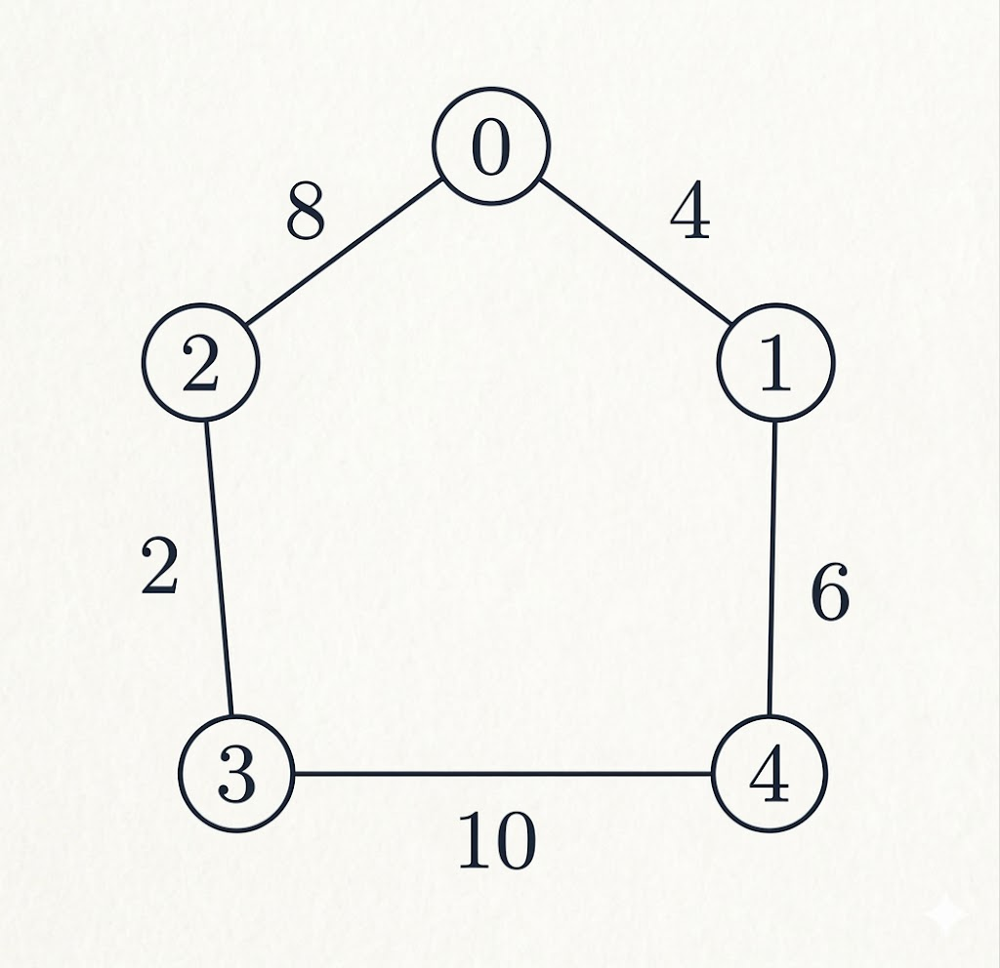

B.Tech. III Semester
Examination, December 2025
Grading System (GS)
Max Marks: 70 | Time: 3 Hours
Note:
i) Attempt any five questions.
ii) All questions carry equal marks.
iii) In case of any doubt or dispute the English version question should be treated as final.
a) Define countable and uncountable sets. Prove that the set of rational numbers is countable. (Unit 1)
b) Using Venn diagram, prove:
$A \cap (B \cup C) = (A \cap B) \cup (A \cap C)$ (Unit 1)
a) Define relation. Explain equivalence relation and partial ordering relation with suitable examples. (Unit 1)
b) Let
A = {1, 2, 3}
R = {(1,1), (2,2), (3,3), (1,2), (2,1)}
Check whether R is an equivalence relation and find equivalence classes. (Unit 1)
a) Define one-one, onto and bijective functions. Prove that inverse of a function exists if and only if the function is bijective. (Unit 1)
b) State and prove Pigeonhole Principle. (Unit 1)
a) Construct truth table for the proposition.
$(p \rightarrow q) \leftrightarrow (\neg p \vee q)$ and show that it is a tautology. (Unit 3)
b) Convert the following statement into predicate logic and write its negation: "Every student studies Discrete Mathematics." (Unit 3)
a) Prove by mathematical induction that:
$1 + 2 + 3 + \dots + n = \frac{n(n+1)}{2}$ (Unit 1)
b) Prove by contradiction that $\sqrt{2}$ is irrational. (Unit 1)
a) Define group and Abelian group. Prove that identity element of a group is unique. (Unit 2)
b) Find all subgroups of the group $Z_8$. (Unit 2)
a) Define Finite State Machine. Explain FSM as a language recognizer. (Unit 3)
b) Design a finite state machine that accepts all binary strings ending with 01. (Unit 3)
a) Define Euler path and Euler circuit. State necessary and sufficient conditions for their existence. (Unit 4)
b) Explain Dijkstra's Algorithm and find the shortest path from a given source vertex 0 to all other vertices in a weighted graph. (Unit 4)
